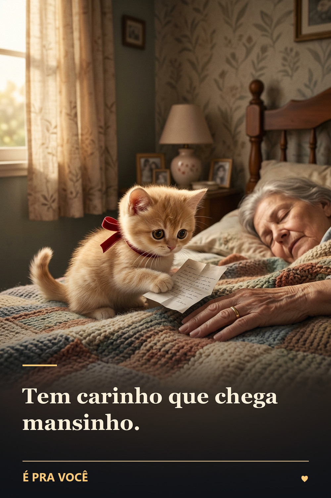

☕ Boa Tarde · original
Um bilhetinho de carinho para sua tarde
Às vezes um gesto pequeno muda o clima do dia.

Imagine receber uma carta inesperada de alguém que só queria lembrar que você é importante. Não há pedido, cobrança ou urgência: apenas um carinho que chegou até você.
Quem cuida de muita coisa também precisa ser cuidado. Uma mensagem curta, quando é sincera, pode abrir espaço para uma conversa que faz bem.
Que seu dia seja surpreendido por delicadeza. E que você tenha a oportunidade de deixar essa mesma delicadeza no caminho de outra pessoa.
Passei para te entregar um carinho: que sua tarde seja leve e seu coração fique quentinho.
Mensagem pronta para compartilhar
Passei para te entregar um carinho: que sua tarde seja leve e seu coração fique quentinho.
Personalize o recado com uma lembrança ou o nome de alguém especial antes de enviar.